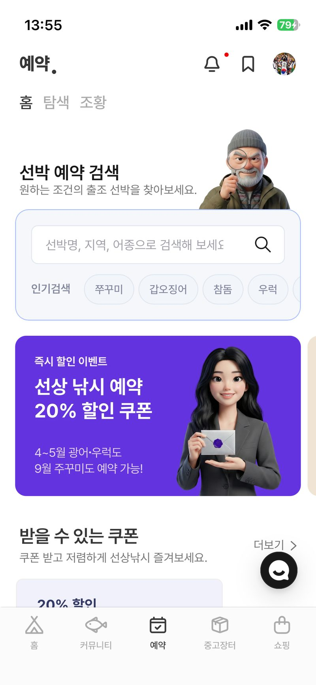
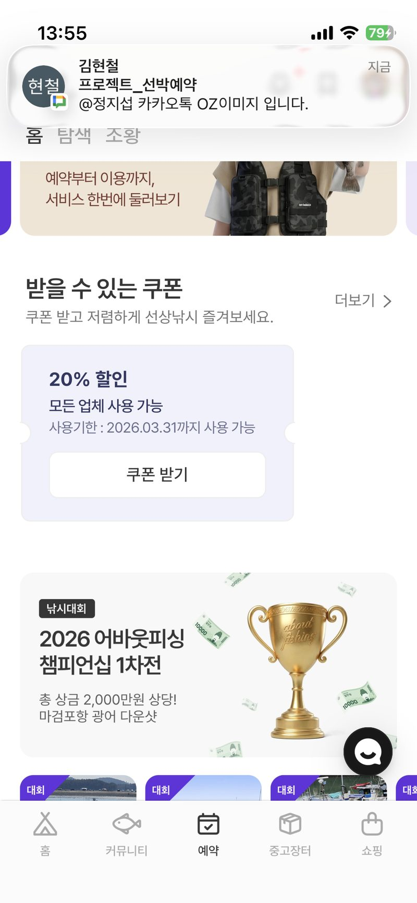
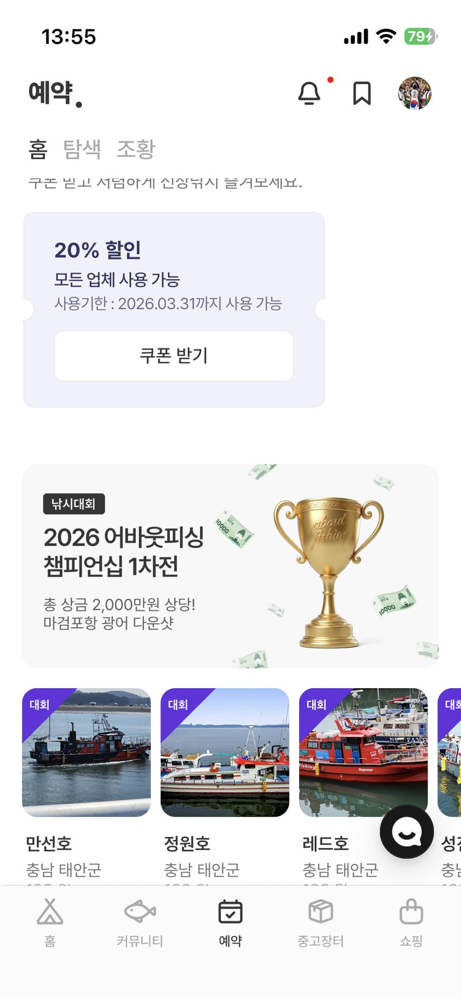
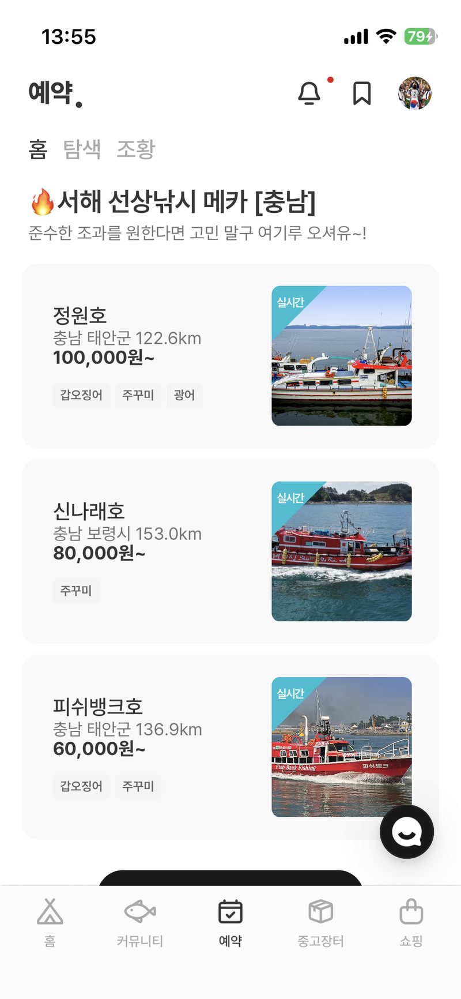
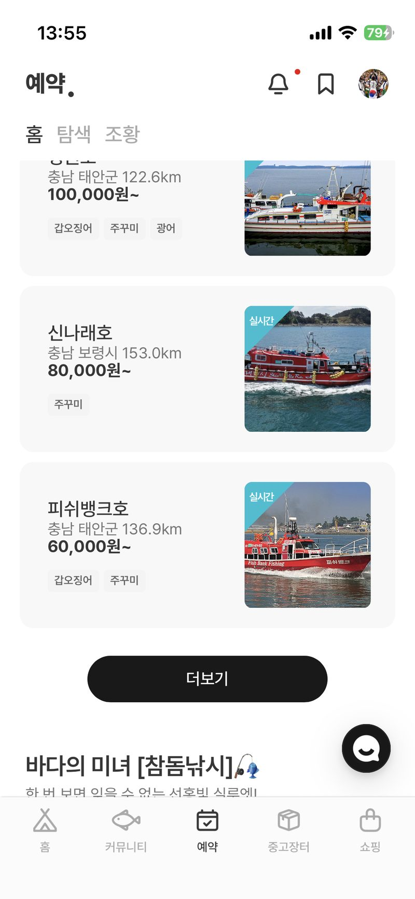
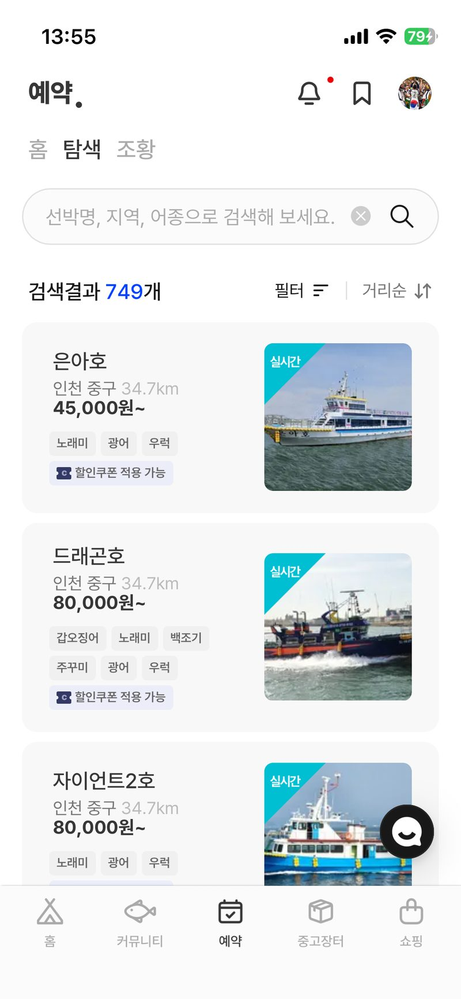
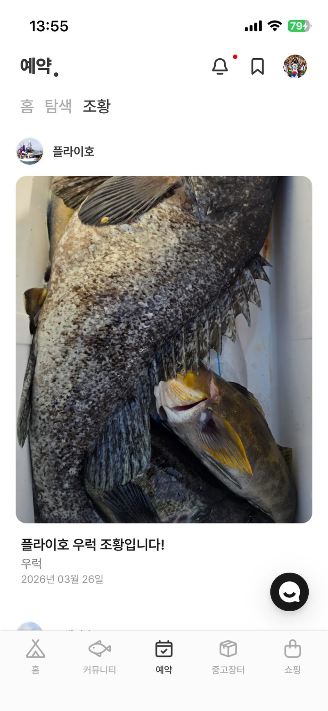
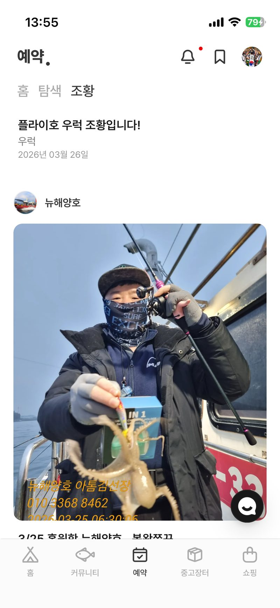

01AboutFishingCPO · PO2026 · Q1
예약 / 얼라이언스 — 한 달 10건이 865건이 되기까지.
자사 직판이 아닌 외부 사업자 입점만 잘라, 월 예약을 넉 달 만에 86배로 키웠습니다.
3.63억 4개월 누적
86× 월 판매 건
24.87만 예약 ARPPU
19.5% 4월 재구매
Plates — 예약 / 선박 / 조황








i.왜 했나
현상
선상 낚시는 결제까지 거치는 의사결정 단계가 가장 많은 도메인입니다. 어떤 배에서, 어떤 어종을, 얼마에 가는지가 한 화면에서 정리되지 않으면 사용자는 단톡방과 전화 예약으로 되돌아갔습니다.
진짜 병목
시장을 키우는 병목은 수요가 아니라 공급의 분산이었습니다. 4조 규모의 선박과 선장이 흩어져 있고, 예약과 조황 정보가 카카오톡에 묶여 있었습니다.
그래서 이 방향
자사 직판 대신 외부 사업자 입점을 택했습니다. 직판은 마진이 컸지만 공급을 우리가 다 떠안아야 해, 시리즈A 규모에서 86배 성장은 불가능했습니다.
ii.어떻게 했나
공급 유인 설계
선장이 직접 모객하는 것보다 우리 앱에 올리는 게 이득이 되도록, 입점 선장에게 예약 알림·정산 자동화·조황 연계를 묶어 제공했습니다.
전환 레버
동선(검색→상세→옵션→결제) 중 이탈이 가장 큰 옵션 분기를 먼저 손봤습니다. 어종·인원·승선일이 가격에 미치는 영향을 한 화면에 보여주자 다음 단계로 넘어갔습니다.
결정의 한 점
마지막 관문은 신뢰였습니다. 사용자가 사진을 믿어야 결제까지 갑니다. 조황 카드를 사진 우선·어종 태그·선박 링크 세 축으로 재설계해 신뢰 지표를 끌어올렸습니다.
iii.무엇이 남았나
3.63억
4개월 누적 거래액
865건
3월 예약 (86×)
24.87만
예약 ARPPU
19.5%
4월 재구매율